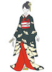
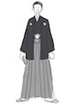
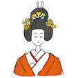
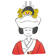

【11月ワーク】
挙式スタイルと演出
今月は、コレスポンデンス分析と同時進行で日本の挙式スタイルの変化と種類、それに伴う演出の違いについて調査していく
日本では、主に４つのスタイルが挙げられる
・キリスト教式
・神前式
・仏前式(編集中)
・人前式(編集中)
それぞれ説明していく
キリスト教式
キリスト教は大きく分けて、カトリックとプロテスタントの2つの宗派に分かれており、それぞれ概要や結婚式に関するルールなども異なる。
●カトリック
・新郎新婦のどちらか一方が信徒でないと挙式を挙げることができない
カトリックは伝統を重んじる規律が厳しい宗派のため、離婚を認めていない。
カトリック式の結婚式を挙げられるのは“初婚”の方のみで、死別以外の理由で再婚の挙式を行なうことはできない。
・祭壇の十字架にキリストがはりつけられているカトリック教会にて結婚式を挙げる
・バージンロードが「深い愛情」を意味する深紅か、「希望」を意味する緑色
・カトリック教会で挙式するためには、事前講習を受ける必要がある
講習の内容は、主に“宗派”に関する理解や、“結婚”や“夫婦とはどんなものなのか”について学ぶ
●プロテスタント
・信徒以外でも教会にて挙式を挙げることが可能
・街の教会やホテルや結婚式場にあるチャペルに牧師を迎えられることで、挙式を挙げることができる。
・カトリックの場合は死別以外の理由で再婚の結婚式を挙げることはできませんが、プロテスタントは離婚理由など状況によっては再婚の結婚式も行なえます。
・祭壇の十字架がシンプルであり、十字架にキリストは貼り付けられておらず、内装は簡素なつくりで、絵画や偶像が置かれていないところがほとんど
・バージンロードが、清楚な白。豪華なカトリックの教会と比べて、洗練された雰囲気
●共通事項
・費用
キリスト教式の結婚式を挙げる場合は、教会に払う費用を“献金”と呼ぶ
教会にとって結婚式はビジネスではないため、結婚式に関するお金は信者が自発的に捧げるお金と考えられている。
自発的に捧げるものなため、教会によっては明確な金額を設定・公開していないところもあるが、一般的な相場は約10～20万円程度。
・衣装
教会で結婚式を挙げる場合は、基本的に肌の露出が控えめな衣装が望ましいとされている。
中には、肩の見えるデザインのドレスはNGという教会もある。
・バージンロードを踏まない
欧米では昔、教会の床下に悪魔が潜んでいると考えられていたため、教会の床に布を敷いくことで花嫁を悪魔から守っていたという言い伝えがある。
このように教会のバージンロードには結婚式において特別な意味があるため、ゲストは立ち入らないのがマナーです。
神前式
神前式（神社挙式）は、神社に祀られている神様の前に結婚を誓うという日本の伝統的な挙式スタイル。
●歴史（次回詳しく調査）
神社式の元々の起源は、古くは室町時代まで遡り、当時は3日ほどかけて結婚式が行われていたとされ、
現在の様な神社挙式の流れが完成したのは、明治33年に大正天皇が東京大神宮（当時は日比谷大神宮）で挙げた結婚式だとされている。
和装のイメージが強い神社式だが、神社式の特徴はそれだけではなく、例えば、神社式では、結婚とは新郎新婦だけでなく、家族と家族の新たな結びつきだと考えられている。
そのため、挙式中は新郎新婦の後ろに両家の両親が座り、2人を見守ります。緊張感のある雰囲気が特徴だが、各儀式を通じて、結婚への強い決意や意思を確認することができ、
また挙式の後には儀式を終えた安堵と、暖かい家族の絆を感じられることが特徴とされている。
また、神社式は神殿で行われるため、新郎側・新婦側合わせて30名～50名程度が参列可能な人数となっている。
●流れ
1.参進の儀（さんしんのぎ）
琵琶や太鼓、竜笛などによって奏でられる「雅楽」の調べの中、斎主や巫女に先導され、本殿まで移動。「花嫁行列」とも呼ばれ、新郎新婦の後ろに両家の両親、次いで親族が並ぶ。
↓
2.入場
参進の儀で並んでいた、新郎新婦・両家の両親・親族の順で入場。神前に向かい、右に新郎側、左が新婦側になり、親族入場後は、参進の儀に参列していない親族や友人が順に入場。
↓
3.修祓の儀（しゅばつのぎ）
「修祓」とは、罪や穢れを祓い、心身を清めることを意味します。
神主が「祓詞（はらいことば）」を述べた後、大幣(おおぬさ)を振り、お祓いをして身を清める。
↓
4.祝詞奏上の儀 （のりとそうじょうのぎ）
「祝詞」とは、神様に伝える言葉のこと。神主が両家の結婚を神様に報告し、加護をお祈りする儀式。
↓
5.三献の儀（さんこんのぎ）
新郎新婦が大・中・小3つの盃で御神酒を三口で飲み、夫婦の契りを交わします。
別名「三々九度の盃」や「三々九度」とも呼ばれている。
↓
6.誓詞奏上（せいしそうじょう）
新郎新婦が神前で夫婦になる誓いの言葉を奏上する儀式。
↓
7.指輪交換の儀
元々神社式にはない儀式だったが、昭和30年代から取り入れられるようになり、現在では多くの神社挙式で行われている。
↓
8.玉串奉奠（たまぐしほうてん）
神と人の心を繋ぐとされている「玉串」を神殿に捧げる儀式。
神殿に供えた後は、「二拝二拍手一拝」、つまり2回深くおじぎをした後、2回拍手をし、最後に1回浅くおじぎをする。
↓
9.巫女の舞
ふたりの門出を祝い、雅楽の調べに乗せて、巫女が舞を奉納する。
↓
10.親族盃の儀
両家が親族となる儀式。巫女が親族全員にお神酒を注ぎ、全員起立して一斉に3回で飲みほします。
↓
11.斎主（さいしゅ）あいさつ
神職が式を執り納めたことを神に報告して一拝。
↓
12.退場
入場した時と同じ順番で退場。退場後に集合写真を撮影する神社もある。
●衣装
新婦

・白無垢
白無垢は、中に着る掛け下も上に羽織る打ち掛けも白色の婚礼用の和装。室町時代から最も格の高い衣裳として、身分の高い女性の間で着られるようになった。
白無垢の色合いは純白から生成りまでさまざま。素材も唐織や刺しゅう柄などバリエーションがある。
・色打ち掛け
色打ち掛けは、色や柄が華やかな打ち掛けを羽織ったスタイル。最近は白無垢のような淡い色合いの色打ち掛けもある。
挙式を白無垢で行い、披露宴で色打ち掛けを着る場合は、打ち掛けを変えるだけでスピーディーにお色直しができる。
・黒引き振り袖
黒引き振り袖はお引きずりとも呼ばれ、江戸時代後期から昭和初期の婚礼で一般的に着られていた花嫁衣裳。黒地に松竹梅や鶴といった吉兆柄が描かれ、
帯が見えるため後ろ姿も華やかで、文金高島田に角隠しを合わせると引き締まった印象になる。
新郎

・紋付き羽織袴
新郎は、黒の羽織に黒のしま柄、もしくは茶色の袴を合わせた、紋付き羽織袴（もんつきはおりはかま）が正装。
羽二重（はぶたえ）という織り方で織られた黒の羽織、黒羽二重（くろはぶたえ）が最も格式が高いとされている。黒以外は色紋付きと呼ばれ、
新婦の和装の色合いに合わせて、白や青、グレーなど色無地の羽織や袴を合わせることもある。
ヘアスタイル

神前式では基本的に和装を着るため、髪型も和装に合うスタイルにします。以前は日本髪のかつらをかぶるのが通例でしたが、最近ではどの和装でも洋髪が人気。
一方で日本の花嫁らしさも見直されていて、綿帽子や角隠しを選ぶ人もいる。
・文金高島田
文金高島田とは花嫁特有の日本髪の結い方のことで、多くはかつらをかぶる。
江戸時代の未婚女性の結い方である島田髷（しまだまげ）のまげを高くすることで、優美な雰囲気になっている。
・綿帽子
綿帽子は、文金高島田を結った上にかぶる布のこと。白無垢にのみ合わせることができる。
「挙式が終わるまでは新郎以外に顔を見られないように」という意味があり、挙式後は取り外す。
・角隠し
角隠しは、挙式の際に文金高島田の髪型の上にかぶせる布状の覆いのこと。
角隠しは白無垢だけでなく、色打ち掛けや黒引き振り袖にも合わせられる。「角を隠して夫に従う」の意味があるといわれている。
・洋髪
和装に合わせた洋風のまとめ髪のこと。和と洋のミックスで、モダンな印象に仕上がる。
かつらに比べて、ドレススタイルへのチェンジが早くできるという利点もある。
●演出
・参進の儀
いわゆる花嫁行列のこと。神社の入り口から神殿に向かう参道を、神主や巫女が先導して新郎新婦が歩み、その後ろを親、親族の順と続く。
・巫女舞
神前式の間に、巫女が神楽に合わせて舞を奉納すること。神社によって組み込まれていることもあれば、追加演出になっている場合もある。
・指輪交換
結婚指輪の交換は、中世ヨーロッパで始まった習慣。近年は神前式でも取り入れられるところが多くなっている。
「指輪交換（ゆびわとりかわし）の儀」として、式に組み込まれていることもある。
・折り鶴シャワー
キリスト教式で行うフラワーシャワーを模して、退場時に行う和風の演出。鶴は一生をつがいで過ごし長寿でもあることから、夫婦の幸せを祈って折り鶴をまく。
・水合わせの儀
新郎新婦がそれぞれの実家でくんできた水を、一つの杯の上で合わせる儀式。その水をふたりが飲むことで、新たな家族の誕生を祝う。
それぞれ異なる環境で育ったふたりが、互いになじんで幸せに暮らせるようにとの願いが込められている。